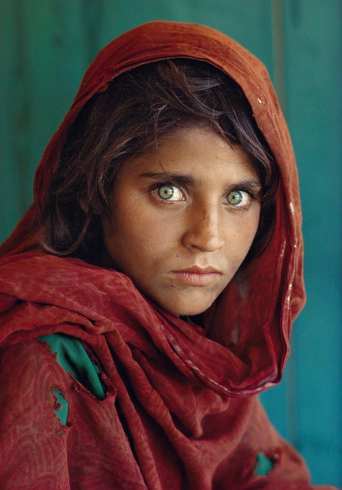

BAMIYAN · بامیان
Band-e Amir
Blue lakes held by limestone cliffs.

A LAND OF STORIES · CENTRAL ASIA
Where mountains keep ancient secrets, blue waters mirror the sky, and every valley carries a story.
Explore the homeland ↓01 / THE LAND
This is Afghanistan: a meeting place of mountains and gardens, old cities and open skies. From the turquoise lakes of Bamiyan to the blue-tiled shrines of the north, its beauty is written in stone, water, craft and memory.
02 / PLACES TO REMEMBER
A journey through storied places and breathtaking horizons.
Blue lakes held by limestone cliffs.

Traces of a remarkable ancient past.

A masterpiece rising from a remote valley.

Blue mosaics and quiet grandeur.

Glazed tiles in a symphony of colour.

A landmark looking over the capital.

Wide valleys beneath the Hindu Kush.

The city framed by rugged peaks.

History set in a dramatic landscape.

One of the country's most striking natural wonders.

A landscape shaped by time.

Intricate detail from a medieval monument.

Historic forms in the heart of the capital.

Monuments of a celebrated cultural city.
03 / LIVING HERITAGE
Colour, patience and artistry passed from one generation to the next.

In every knot, a patient hand; in every pattern, a piece of home.


04 / AT THE TABLE
A generous table, fragrant rice, warm bread and flavours made for sharing.

Fragrant rice topped with tender meat, sweet raisins and golden carrot strips.

Delicate dumplings, folded by hand.

Golden flatbread with a savoury filling.

Many dishes, one welcoming table.

THE PEOPLE
In the faces, daily work and hospitality of its people, Afghanistan's story continues.
06 / YOUR JOURNEY
Tell us what you would love to discover. This sample enquiry form is for the class project and does not send or store personal information.